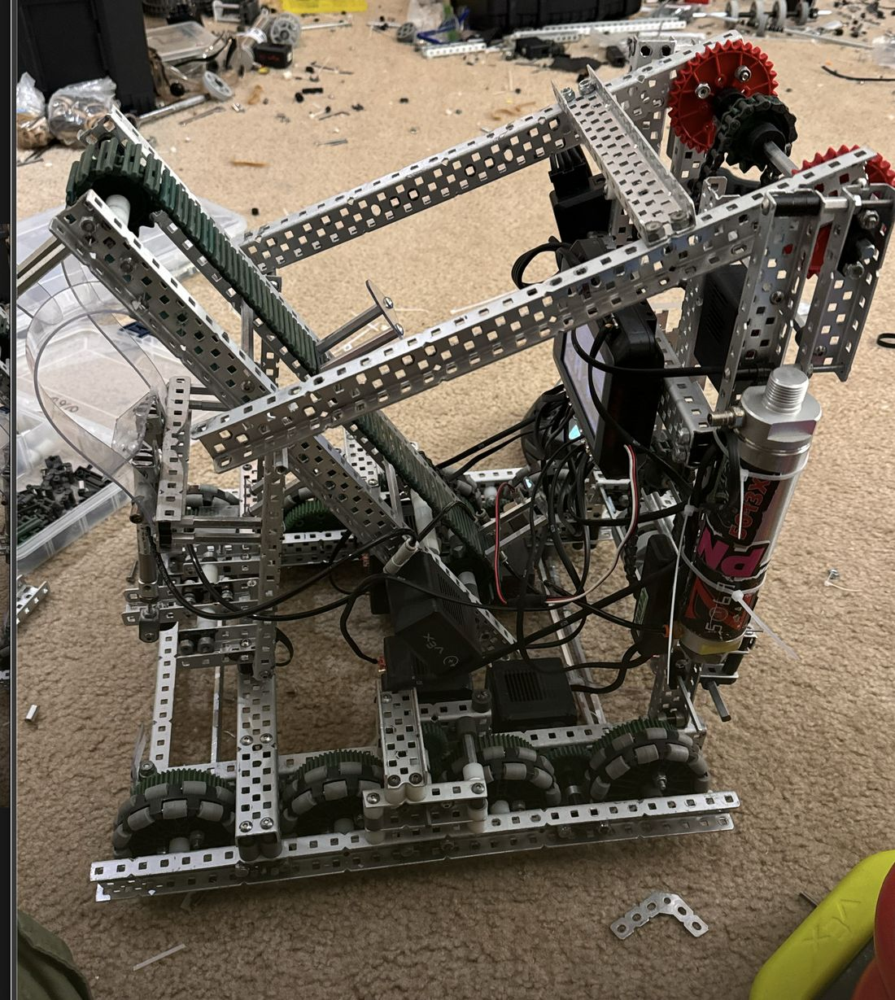
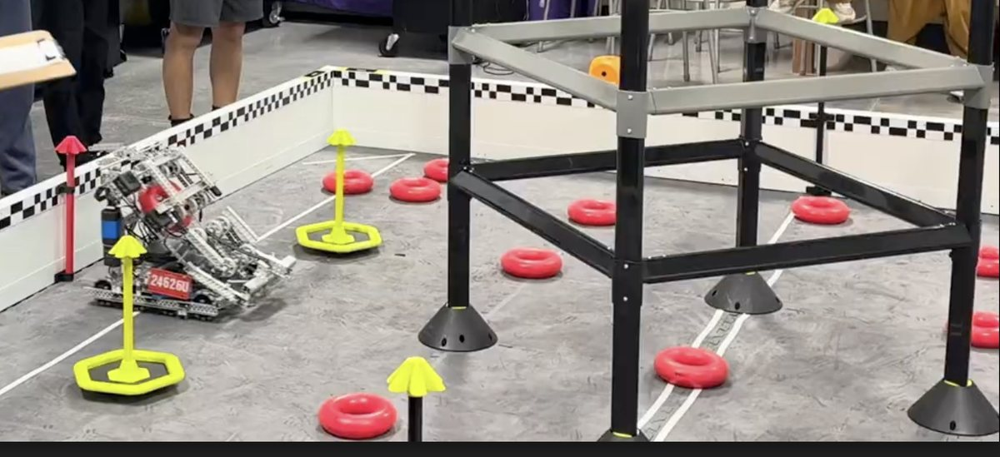
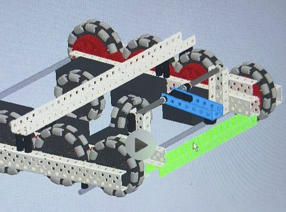
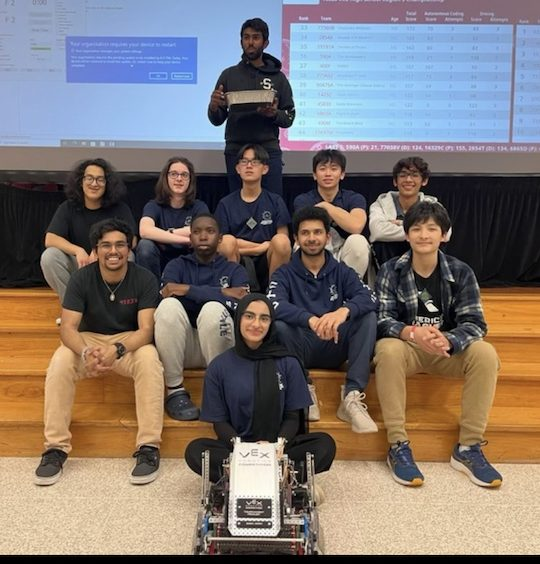

Electrical Engineering · Texas A&M · B.S. expected May 2029
I build the electronics that measure and control moving machines.
Embedded firmware, closed-loop control, and PCB design. Currently
Controls & DAQ on Texas A&M Baja SAE 2027, plus an independent
research build on liquid-cooled robotic actuators. The work I like best
happens where a datasheet number meets a bench measurement that disagrees with it.
Designed a complete KiCad schematic for a distributed CAN node (STM32G431RBTx, native FDCAN) acquiring engine and CVT secondary RPM plus rear shock potentiometers across a 14-sensor, 12 V vehicle network.
Specified harness and connector architecture to an IP67 ingress standard — Deutsch DT for sealed field-serviceable runs, Molex Micro-Fit 3.0 board-mount pigtails transferring vibration load into the board rather than into solder joints.
Rebuilt the inductive RPM front end after bench testing invalidated the design, replacing attenuation with a 2N3904 open-collector topology that regenerates logic level from board supply.
Built dynamometer test instrumentation on ESP32-C3 with interrupt-driven period capture, HX711 load cell filtering, and fail-safe detection commanding neutral on stale data at over 3,600 lbf.
Nov 2025 — Jun 2026College Station, TX
Hardware Security Research Assistant
Texas A&M University
Tuned CPU architecture for computationally heavy zero-knowledge proof protocols, targeting core allocation across NTT, MSM, hash, and sum-check algorithms alongside FPGA/VLSI design.
Implemented NIST FIPS post-quantum lattice-based cryptography with learning-with-errors key encapsulation and decapsulation.
Aug 2025 — May 2026College Station, TX
Technical Lead — ThinkTank TAMU
AIAA Undergraduate Space Mission Design Challenge
Designed CubeSat subsystems — telemetry, solar weather monitoring, communication protocols, mission architecture.
Proposed heliocentric orbits holding a link across black-shadow periods in the Mars–Earth direct transmission line.
Led the concept of operations, trade studies, and modeling of the consolidated instrument.
Jun 2024 — Jun 2025Houston, TX
AI/ML Engineer & Founder
Ankel Web Services
Founded an AI-powered customer support web service for local businesses; fine-tuned language models on client FAQ datasets to create autonomous support agents.
Built full-stack applications on a Supabase backend with Python API services, reaching ~95% customer query accuracy across 50+ daily interactions.
Feb 2025Houston, TX
Weather Physics Research Assistant
University of Houston
Conducted dimensional analysis on NeuralGCM graphs to improve predicted weather model clarity by 20%; validated predictions against the ERA5 dataset.
Developed methods for detecting humidity, precipitation, and temperature anomalies.
Sep 2021 — Jun 2025Houston, TX
Ambassador / President — Team 24626 Polaris
Katy Robotics Alliance (VEX)
Led the team across 50+ competitions on both operations and technical fronts; secured $3,000 in annual grants from MTS sponsors.
Built training programs for powertrain systems, CAD, and autonomous programming.
Three VEX World Championship appearances — 1st in Texas, Texas Finalist, Top 5 Skills State.

Top lever arm for pick-and-place on wall stakes, with the conveyor that feeds it. Chain drive, pneumatics, and omni wheels on an aluminium C-channel frame.

Team 24626 running the High Stakes field — the intake and its secondary hood are what kept rings seated through transit between stakes.

CAD of the assembly — modelled before build so subsystem clashes surfaced on screen rather than on the floor.

State win with the team and the competition robot, results on the board behind.
03
Other projects
shorter builds
Aerospace Scholar · Rice University
High-Altitude Weather Balloon Payload
Designed weather-balloon experiments under variable temperature, pressure, and
speed at 85,000 ft. Configured LoRa radio telemetry and programmed the Arduino
handling raw data acquisition and power distribution.
KiCad schematic capture and ERC · power distribution and decoupling strategy ·
ferrite-based analog supply isolation · EMI mitigation · open-collector and
level-shifted sensor front ends · CAN transceiver and bus termination ·
SMD footprint selection for hand assembly · STM32 pin planning and peripheral allocation
Embedded systems
C++ bare-metal and Arduino framework · interrupt service routines with IRAM
placement · hardware timer input capture · LEDC PWM generation · 24-bit ADC
interfacing · digital filter implementation · watchdog and timeout fault detection ·
CAN / FDCAN · STM32CubeIDE
Controls & test
PID with feedforward · Field-Oriented Control · plant linearity analysis as a
design driver · latency budgeting · fail-safe state design · DAQ methodology ·
test plan development · weighted decision matrices
I'm looking for internships and co-ops in embedded systems, controls, test
engineering, and hardware design. If you have a machine that needs instrumenting,
I'd like to hear about it.